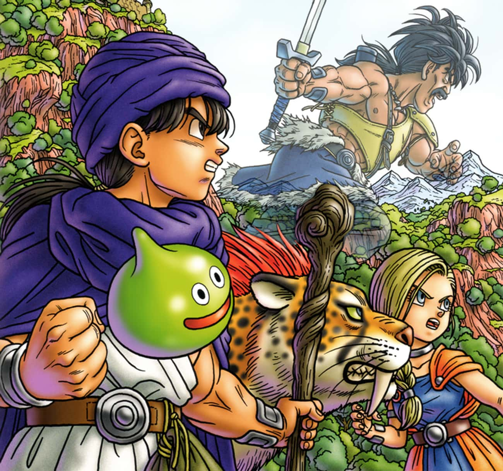
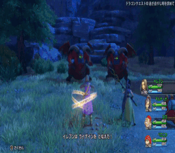
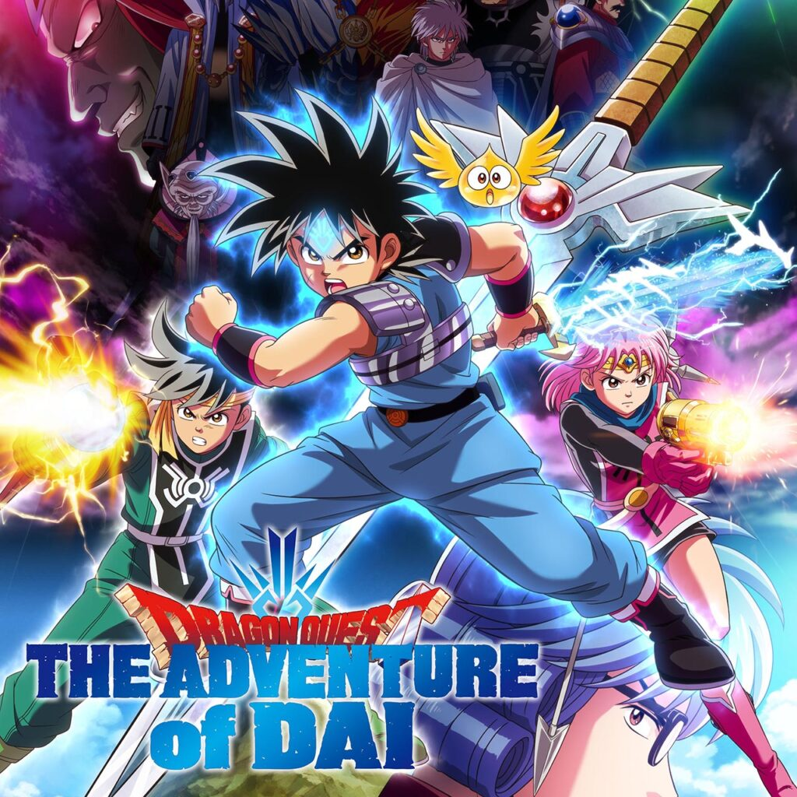
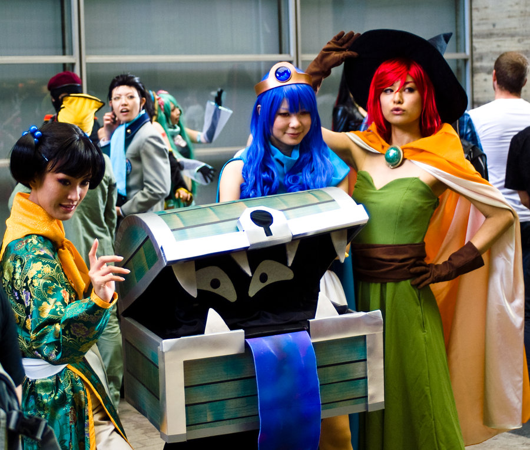

Um Jogo Revolucionário
O Início da Jornada
Dragon Quest é uma franquia japonesa de RPGs criada por Iuji Horii e publicada pela Square Enix (na época chamada apenas de Enix), com design de personagens feito ppor Akira Toriyama.O jogo foi lançado inicialmente para o Famicom (conhecido no Brasil como Nintendinho) em 1986, sendo um grande sucesso de público e crítica.
Premissa e Jogabilidade
A premissa principal do jogo é a de que o jogador encarne o papel do Herói, como assim é chamdo personagem principal, que tem a missão de salvar o mundo de um terrível ser malígno. Em sua jornada, o Herói geralmente é acompanhado de um grupo de aliados, cada um com carácterísticas e habilidades distintas. No jogo, o jogador explora o mundo de Dragon Quest encarando desafios que aparecem pelo caminho, sendo o mais comum a batalha com mostros. O combate é realizado em turnos, assim como nos RPGs de mesa, e ganha pontos de experiência por cada batalha vencida, além de adiquirir itens , dinheiro ou novas habilidades.
O Anime
O jogo foi adaptado para anime em três ocasiôes. A mais conhecida delas foi exibida no Brasil nos anos 90, sob o nome de "Fly, o Pequeno Guerreiro", alcançando grande popularidade. Mais recentemente, um novo anime foi lançado.
Curiosidade:
O jogo foi adaptado para anime em três ocasiôes. A mais conhecida delas foi exibida no Brasil nos anos 90, sob o nome de "Fly, o Pequeno Guerreiro", alcançando grande popularidade. Mais recentemente, um novo anime foi lançado.